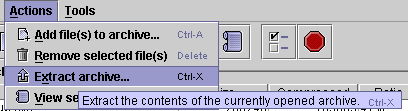
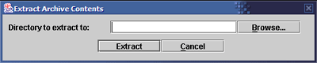
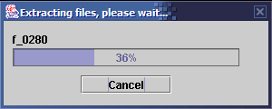

Shrinkage will extract an archive file to the directory you choose, and re-create the entire directory tree structure stored in the file.
Before you can extract an archive, you must open it.
|  | 1. Choose "Extract archive..." from the Actions menu. |
|  | 2. A dialog will pop up, asking you to enter the directory to extract to. Type the full path or click Browse and navigate to the desired path. When you have entered a path, click "Extract" to continue with the operation. |
|  | 3. This progress screen will keep you informed. You may cancel
the archive operation at any time by clicking Cancel. Note: If you cancel the operation, any files that were extracted will remain on disk. They are not cleaned up. |